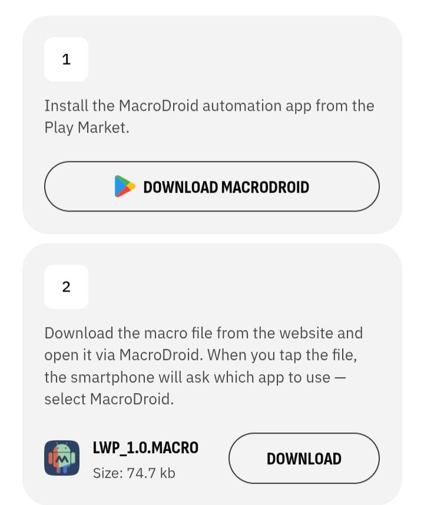
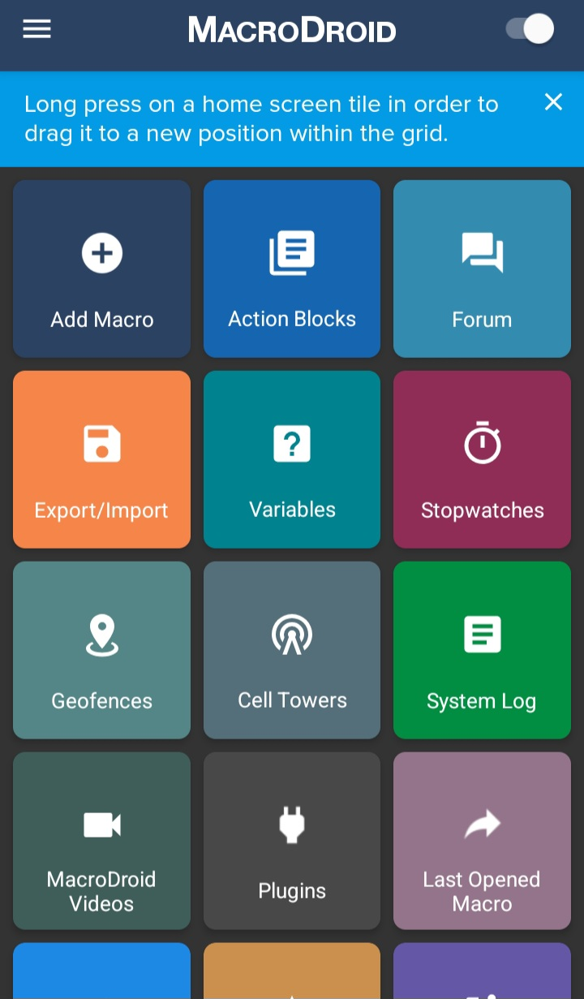
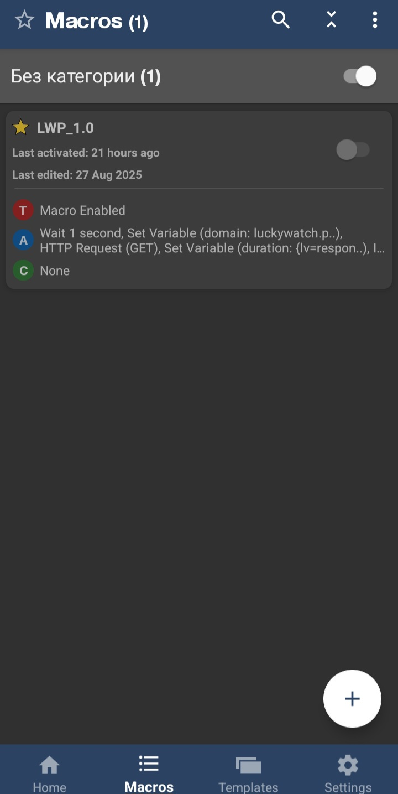

Disclosure
This article contains referral links to LuckyWatch and FaucetPay. If you sign up through our links, we may earn a small commission at no cost to you. We only recommend platforms we've personally tested. See our full disclaimer.
Looking for a genuinely low-effort way to earn on your phone? LuckyWatch is one of the simplest GPT (Get-Paid-To) platforms I've come across — it pays you to watch short video ads, and it comes with an official MacroDroid macro that automates the whole thing.
In this guide I'll walk you through the exact setup so your phone earns while it charges. No technical skills needed.
What Is LuckyWatch?
LuckyWatch (luckywatch.pro) is a mobile-first GPT site that pays real money for watching short video ads. No investment, no skills required — just watch and earn.
A few things that stand out compared to similar platforms:
- Mobile-friendly: Designed to work smoothly in a mobile browser
- Official automation support: LuckyWatch provides their own MacroDroid macro file — they actually want you to automate it
- FaucetPay payouts: Withdrawals go straight to your FaucetPay wallet
- Clover Coins: An in-app currency used for boosts and bonuses
- Referral contests: Active prize pools (the current one has a $1,200 cash prize)
It's not going to replace your income. But if you want something running in the background while your phone charges, it's one of the better options I've tested.
What You Need Before Starting
Three things, all free:
1. A LuckyWatch Account
2. A FaucetPay Wallet
LuckyWatch pays out to FaucetPay. If you don't have an account yet, grab one now — it takes 2 minutes.
Create your FaucetPay wallet:
Join FaucetPay (Referral Link)Free micro-earnings wallet. Supports BTC, ETH, LTC and more.
3. MacroDroid (Android Only)
MacroDroid is a free Android automation app. LuckyWatch provides their own macro file that works directly with it — so you're not building anything from scratch.
Android Required
The LuckyWatch macro only works on Android devices. iOS users can still earn manually by visiting the site, but the automation won't work on iPhone.

How To Automate LuckyWatch (Step-by-Step)
Step 1: Install MacroDroid
Download MacroDroid from the Google Play Store. The free version is all you need for this.
Once installed, open it and take note of the layout — you'll see options like "Add Macro", "Export/Import", and more. Leave it for now and move to step 2.
Step 2: Download the LWP Macro from LuckyWatch
Head to the LuckyWatch website and find their automation page. They provide an official macro file called LWP_1.0.MACRO (74.7 KB) — this is the file you'll import into MacroDroid.
About the Macro
The LWP_1.0 macro works by making HTTP requests directly to the LuckyWatch API — it doesn't simulate taps on screen. This is cleaner and more reliable than UI-based automation. The macro was last updated August 2025.
When you tap the downloaded file on your phone, Android will ask which app to open it with. Select MacroDroid.
Step 3: Import and Enable the Macro
After opening the file with MacroDroid, the macro imports automatically. You'll see it listed as LWP_1.0 in your Macros screen.
Before enabling it, grant any accessibility permissions MacroDroid requests. Then toggle the macro on using the switch next to LWP_1.0.
What the macro does automatically:
- Waits 1 second to initialise
- Sets the LuckyWatch domain variable
- Makes GET requests to the LuckyWatch API to register video views
- Reads the response to track earnings and timing
- Loops through available ad slots
Step 4: Plug In and Let It Run
That's it. Plug your phone into charge, make sure the macro is toggled on, and walk away. The macro handles everything else.
Occasionally you'll get a CAPTCHA notification on your phone. When that happens:
- Tap the notification
- Solve the CAPTCHA (usually a simple image click)
- The macro resumes automatically
No babysitting required beyond that.
One Thing to Watch Out For
Force Stop MacroDroid When Done
MacroDroid running in the background can slow your phone down while the macro is active. When you're done earning for the day, go to Settings → Apps → MacroDroid → Force Stop. This prevents unnecessary battery drain and keeps your phone snappy for normal use.
If you have a spare or secondary Android phone, that's the ideal setup — dedicate it to running LuckyWatch while your main phone stays free.
How Much Can You Actually Earn?
LuckyWatch has hourly and daily visit limits, so there's a cap on what the macro can earn in any given session. Based on real usage:
| Timeframe | Estimated Earnings |
|---|---|
| Per day | ~$0.15 |
| Per month | ~$4.50 |
| Per year | ~$54 |
Not life-changing. But it's genuinely passive — you're not trading time for it once the macro is running. And stacked with other methods, it adds up.
Clover Coins Bonus
LuckyWatch also awards Clover Coins alongside cash earnings. These can be used for boosts (like +20% income for 1 day) and there are ongoing referral contests with cash prize pools. Worth checking the promotions tab occasionally.
Is LuckyWatch Worth It?
Pros
- Official macro provided — nothing to build yourself
- Genuinely passive once set up
- Pays to FaucetPay reliably
- No investment required
- Works well on an old spare phone
Cons
- Android only for automation
- Earnings are small (~$4.50/month)
- Occasional CAPTCHAs interrupt the macro
- Can slow phone performance while running
If you're already using FaucetPay and want something running in the background with near-zero effort, LuckyWatch earns its place in the stack.
Stack It With PC Automation
The real power of this approach is combining phone and PC automation. While LuckyWatch runs on your phone, you can run a separate automation on your PC at the same time.
Phone earning + PC earning = double the passive income with roughly the same effort.
Running automation on your PC too?
How to Automate MakeYouTask on PC (Free Scripts)My 2-script system for automating MakeYouTask MicroEarn — works while you sleep.

Final Thoughts
Bottom Line
LuckyWatch is one of the easiest wins in mobile passive earning. The setup takes under 10 minutes, the official macro does the heavy lifting, and you'll earn a small but consistent amount every day with minimal attention. Plug in, enable the macro, and forget about it. That's the whole strategy.
Related Reading
Was this article helpful?